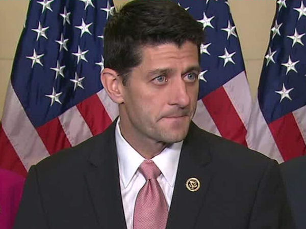

|
 |
 |
|
|
 I recently received an email from Speaker Paul Ryan on behalf of the RNCC, which I have contributed to and supported in the past. When it became apparent that John Boehner would not keep faith with the Republican Platform or with the millions of Americans who gave him a majority in the house...I stopped contributing. Now, they want me back. The following is my letter in response to Speaker Paul Ryan:
Speaker Paul Ryan, Re: Response to your letter to me on behalf of the NRCC
CC: Please pardon me for the length of this letter, but I have some crucial things to share. In the past, I have donated regularly to, and been involved with, the NRCC. But lately I have not done so, and for very good reasons. Let me tell you why. Speaker John Boehner did not keep faith with the principles of the Republican Platform or the voters who elected a GOP majority to the House. That majority was meant to stop the illegal, unconstitutional, and unconscionable activities of President Obama, his administration, and the Democrat party. Sadly, when new members attempted to do so, far too many House Republicans went along with Speaker Boehner against those who tried to stop the Obama administration as they had been elected to do. The result was that nothing changed...and in fact, things grew worse. At the same time, those who stood firmly against Obama were castigated, not only by the press and the DNC, but by the Republican leadership. I hope you recognize and appreciate the level of frustration and anger that this has generated amongst Republican voters. The question now is...Where are you going to stand, Speaker Ryan? I have to tell you, I was extremely disappointed with the passage, with your support and at your behest, of the recent budget. In that budget, Obama Care, Planned Parenthood, and the President's Syrian refugee program were all funded. I viewed this as your fist major action...and first major test. The three things I pointed out fly in the face of the basic, fundamental principles that I expect strong, constitutional conservatives to stand against. I understand you feel you gained some needed compromises that compelled you to go along with these. but speaker Ryan, have you forgotten? Political compromise should NEVER be made at the expense of fundamental principle. Never! Speaker Ryan, all three of those should have been stopped by ANY MEANS NECESSARY. You have the Power of the Purse delegated to Congress in the U.S. Constitution. That power could have been used, should have been used, and in my estimation, MUST be used to stop these fundamental violations of our constitution, the violation of life, and the violation of our national security. We all know that the separate new bills you are passing, while making a definitive statement that needs to be made, will be vetoed by this President. They will not change things. Nust like the show votes against ObamaCare did not accomplish anything. I understand the arguments that indicate that we MUST win the elections this fall and says in essence, that holding up and stopping these things it most likely to lead to a government shutdown that the Democrats and Press would blame on the GOP. So? My answer to that is...Where is your faith? Faith in the American people? Faith in God in Heaven? Large segments of the people recognize what is going on. There is a groundswell amongst people out here in fly over country against the things I listed. It is also against go along to get along politicians. I expect that during the primaries this year...and then later in the general election in November, this is going to be born out. Speaker Ryan, I have to say that your actions in this first major legislative action is causing many to lump you in with the latter...the "go along to get along," politicians and the establishment GOP. Please defend your actions. Please convince me that you are indeed going to use the constitutional means at your disposal to fight and to STOP such activities in their tracks. I know you also just passed a bill against Obama Care which repeals it. Good for you! It should have been done long ago. But as I said, this President is going to veto it. Do you have the votes necessary to over-ride it? If not, is it just another "show vote," meant to try and convince me and other conservative Americans that you are trying to do something? Well...that no lonbger works. why would I believe you are trying to actually do something with a "show vote," when you had the power of the puirse to actually stop it in the budget? The answer is...they do not. Those tactics are old, worn out, and we are not willing to put up with them any longer. I know you are planning a bill to defund Planned Parenthood. Again, good for you...but it too is another "show vote.". This President will veto it. Do you have the votes necessary to over-ride his veto? If not, then I view it as simply another tactic to make it look like you are standing up...when in reality you are not. You could have...and should have...stood up with efforts that actually would have stopped these things during the budget. But you did not. The same will hold true for the Syrian Refugee issue. In the mean time, more American people will be hurt by Obama Care. More American babies will die and be dismembered by Planned Parenthood. And the president will move to bring thousands of Syrian refugees here amongst the American people. You just voted him the funds to do all of them. Speaker Ryan, we expect you to stand, and to stand firmly, against these things. Many of us have prayed for someone who will do so. Will you be that person? You could be...if only you would...but your actions during this budget vote have raised serious doubts. The election is coming, and your actions will either give hope to those Americans who cry out for these things to stop...and send them to the polls...or you will demoralize them, causing many to stay home. Sadly, this very type of thing is one of the reasons you and Mitt Romney lost in 2012. Far too many stayed home and did not vote. I was not one of them...I voted for you. That is why I am pleading for you to resolutely demonstrate and communicate your firm commitment. "No country upon earth ever had it more in its power to attain blessings. Much to be regretted indeed would it be, were we to depart from the road which Providence has pointed us to, so plainly; I cannot believe it will ever come to pass. The Great Governor of the Universe has led us too long and too far to forsake us in the midst of it. We may, now and then, get bewildered; but I hope and trust that there is good sense and virtue enough left to recover the right path." I believe that enough American people still have the virtue and good sense...even at this late date. But they need representatives who will resolutely stand and lead. I also have faith in God Speaker Ryan. The type of things I mentioned above are, IMHO, an affront to God in Heaven...and to the principles which He inspired our founders to use as the foundation for this nation. He has and will raise up individuals, groups, and friends to help us. He has done so in the past and will continue to do so...but we must prove ourselves, as Thomas Paine said, "worthy of the blessing." I fear that His patience, particularly as regards the issue of abortion, grows thin. And understandably so. Millions of His most innocent children are literally being slaughtered and ripped limb from limb in the womb. As many of us suspected all along, the people approving of and participating in that slaughter (amongst whom is Planned Parenthood), have now been shown to be trafficking in the body parts of the children being slaughtered. Please, I appeal to you...do not let these things continue any longer. You have it in your power to begin to stop them today. May God's Spirit be with you Speaker Ryan. May He bless you and yours...and bless you to do what is right to help our nation restore itself to the constitutional principles it was founded on. And if you will not, then may He bless us to find those who will, so that those who will not, can be ushered aside. Sincerely,
Jeff Head
I sent this to Speaker Ryan today. I will let folks know if I get any response, and what that response is. As you can see, I am also copying my full Congressional delegation from Idaho. So you can see it, here is the letter I received from Speaker Ryan which moved me to respond:
Dated January 14, 2016 Jeff,
See the following links for some of my "straight talk" messages to all Americans:
My Message on Islamic Terrorism |
FINE ALL-AMERICAN, LIBERTY ORIENTED BOOKS AUTHORED BY JEFF HEAD
 Dragon's Fury - World War Against America and the West: Following great success in the War on Terror, politicians and analysts alike thought that future global conflict was impossible...but they were wrong. Journey into a possible future where Islamic terrorists sharpen their horrific skills & ally with Red China. In such a future, can the U.S. & western civilization survive? |
 The Stand at Klamatjh Falls: How rural western farmers and their supporters stood up to entrenched environmentalism, activist judges, and agencies of the Federal Government in southwestern Oregon...and prevailed. |
BACK TO JEFFHEAD.COM
Copyright © 2015 by Jeff Head, All Rights Reserved